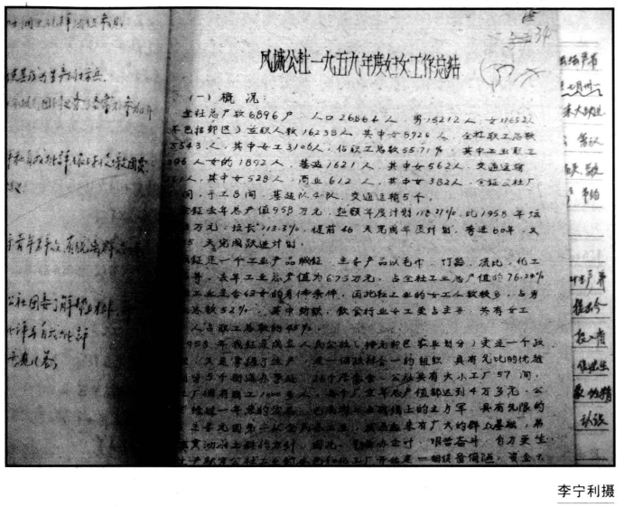
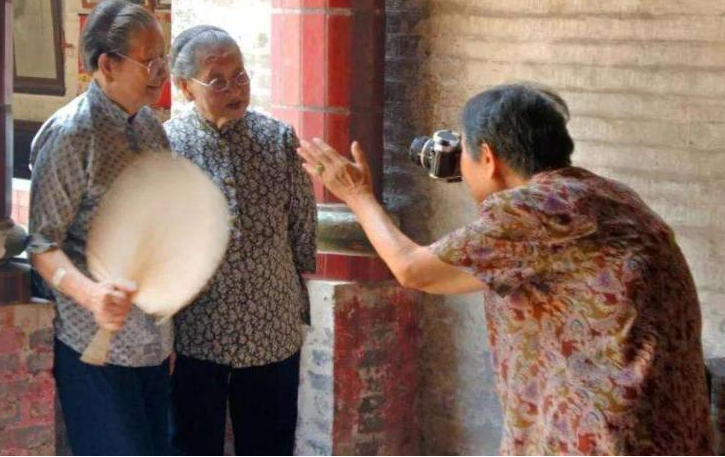
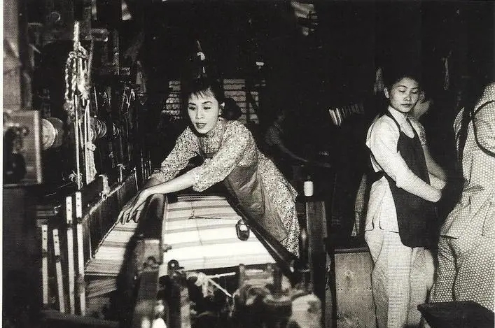
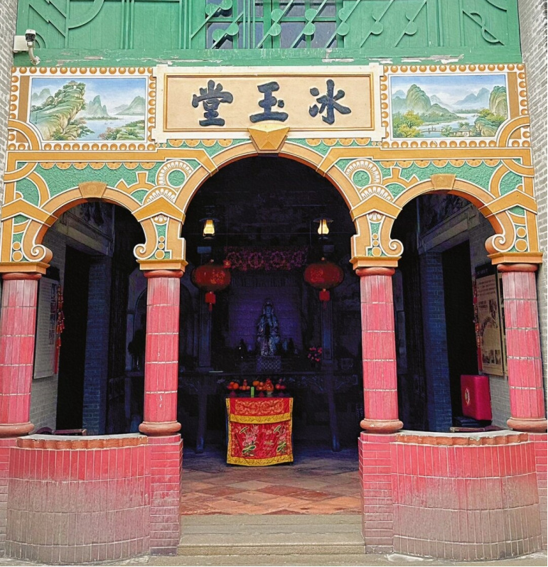

起源争议
不落夫家
"不落夫家"是指女子婚后很长一段时间不和丈夫一起生活，而仍居住在娘家，只是逢年过节到夫家小住，此后直到怀孕生子前始到夫家和丈夫过正常的夫妻生活。这种习俗在古越人的后裔岭南少数民族中的壮、侗、水、苗、瑶和黎族中普遍存在，时间一直延续到近代。有论者以为顺德等地的不落家风俗就是"自梳"的"前身"，依此而论，自梳女习俗可能在明末清初时就已经盛行。清末缫丝业兴起后，女性彻底"抛弃"名义上的婚姻而推崇更为彻底的独身主义形式"自梳不嫁"。
古党洞（废党州）夷人索妇，必令媒人引，女家自送相见后，复即放女归家，任其野合，胎后方还，前生之子例非己有……
宋代《太平寰宇记》 娶日，其女即还其母家，与邻女作处，间与其夫野合，有身乃潜告其夫，作栏以待生子，始称为妇也。
明代《赤雅》 新娶入门，不即合，其妻有数女相随，夫亦有数男相随，答歌通宵，至晚而散，返父母家。遇正月旦，三月三，八月中出与人歌，私通及有娠，乃归夫家，已后再不如作女子时歌唱也。
明代王士性《桂海续志》 南丹溪峒苟人呼为僮……婚不避姓，时上元中元春秋社日，男女答歌苟合，至有妊娠始归夫家。
清代《粤西丛载》卷二十四 至女子自为配偶，相牵梳起头不嫁，或父母强嫁之，亦不乐居夫家，此诚顺德之陋俗。……顺德女子何以有此俗，且能播于国中，间见时人论箸谈片，视此为异举。或谓顺德缫丝厂林立，厂内全用女工，女子在十三四岁以上，便可学习，如积存其工资数年，亦有数百金，差能自立，况可继续作工耶。凡有独立生活者，即不受他人束缚。……女子有相当职业，虽为其一原因，但不尽然，盖不嫁与不乐家之俗，缘起颇远，在修县志时已有此俗可知，查县志之最近辑刊，在咸丰三年癸丑，距今（1924年）已71年。惟同治以后改用汽机缫丝，始能展拓规模，多用女工，即在今日亦每家二三十女工而止。是在同治前，女子谋生之途尚隘，由此似可证明女子不嫁与不乐家之俗，起于女子有独立生活之前也。
温仲良：《顺德教育之计划及其背景》，载《顺潮》，民国十三年（1924年）出版，顺德档案馆：全宗号21，目录号6，案卷号438
金兰之契
"金兰契，又名'金兰恋',俗称'契相知',为两自梳女订立契约关系的同性恋。通常是两相好的自梳女子彼此订约择日拜天地，然后同居共处，情如夫妇。'金兰契'缔结后，双方不得移情别恋，即使父母逼嫁，亦不落夫家。多数'契相知'的女子皆能一生相好。年老时，富家自梳女子往往选择嗣女照料起居，继承遗产。嗣女日后亦招女友缔结金兰，如是代代相传，而互无血统关系。清末民初机器缫丝业盛时，此俗亦流行于缫丝女工中，不仅为农村'姑婆屋'的自梳女子所奉行。" 新编《顺德县志》
金兰会
乾隆《番禺县志》有云："女子在室，相订为契姊妹者，不得他约，有他约则共起逐之，谓之打相知。此皆旧俗相沿，今已渐息。"可见金兰会中的姐妹都不能再与别人有"约",否则会遭到姐妹的驱逐。
道光《南海县志》有曰：广州女子多有结金兰会，誓同日嫁一夫者，相为依恋，不肯适人。强之则归宁，久羁，不复归其夫家。其夫或家贫貌陋，或相诟谇，从而自缢、自溺，不可胜数。甚至习为巫蛊之术，新昏，夕瘗木偶于床帐间，持骷髅以诅其夫，立使昏迷，旬日多死，了无证验，此风惟顺德为最，沙头各堡与相毗连，间亦染其颓风，守土者亟当严禁。
加入该组织有两个作用，其一，已婚者要"不落家",单凭个人力量是不行的，"难以抵档男家催促回去的要求，必须互相结合成一个集体，便可以集体的力量对付男家";其二，女子已婚后，在名义上是男家的人了，如果她不愿去夫家，母家也不是她终身所能依赖的，因此她必须能自找经济上的出路，"但个人力量小，必须结成集体，方有更大的力量，以求得经济上的独立"。（《顺德文丛：顺德自梳女文化解读》）
婚俗影响或反抗
珠三角有"阻头不便，跨头不祥"的婚俗：一家子女需要按长幼之序结婚。所谓"阻头"就是兄姐不能按时婚娶导致弟妹婚期廷误；所谓"跨头"就是弟妹嫁娶先于兄姐。"阻头"和"跨头"在当时都为人所诟。有部分自梳女是家中长姐，为了不"阻头",只好梳起，宣布不嫁。
俗谓弟妹嫁娶，先于兄姊为跨头，兄姊不能嫁娶，致误弟妹之婚期者为阻头。阻头不便，跨头不祥，故通常十二三岁即定婚。然有因拣择过严致成阻头者，谓之拣大；父母心急，即草草为之结婚。谚曰："千拣万拣，拣只烂灯盏。"盖指此也。女子自梳，多于此时行之，亦有伺他家男子夭折，往为执丧者，谓之冒贞。总之，自梳、冒贞以及归宁不返之俗，皆"阻头不便，跨头不祥"之说有以致之也。《中华全国风俗志》, 1922
女子为什么要自梳？因为父母没有为其挑选到合适的婚配对象，所以"自梳"并不是一种嫁娶行为。既然没有婚配对象为什么还要自梳？因为这个女子已经过了婚配的年龄，如果没有嫁娶，则会贻误弟妹的婚期。从这个层面看，"自梳"又被赋予了婚嫁的意义，梳起之后，则没有阻头、跨头的禁忌。梳髻具有两层含义：一是表示成年，二是娶嫁时的必经礼仪。李宁利等人也发现，女子梳起所要经历的仪式均与出嫁的仪式相同。"自梳女"虽然没有结婚，但是在各种乡村风俗和家庭仪式中，都可以以"已婚"的形象出现。不要贻误弟妹的婚期，这是女子梳起的其中一种情况。根据笔者的调查，不仅是亲兄弟姐妹之间不能 徐婧捷
另一方面，在封建宗法制度下，妇女受着种种压迫，家庭的权力全操在翁姑和丈夫手里，做媳妇的，事事都逆来顺受，饱受痛苦。如嫁入贫苦人家，生活不好过，还要生男育女。嫁到富户，又担心丈夫见异思迁，弃妻宠妾。因此年轻姑娘宁愿牺牲自己的青春年华而自梳起来。
五姊抗婚："传说很久以前，容奇有一户胡姓人家，养了五个女儿，大姐嫁给有钱人'守墓清'（嫁给已死的男人）；二姐嫁给富商做妾，过门不到一年，不堪大婆、丈夫的打骂、家公的调戏而跳井自尽；三姐嫁给一个穷石匠，丈夫采石跌断了脚，家无生计，被迫拖儿带女上街乞食；四姐嫁给穷耕仔(雇家),生活重担压得她未及30岁便面黄髻白。五姐长到26岁仍不愿相亲，她想到四个姐姐的悲惨命运将要落到自己头上，思前想后，决定永生不嫁人，她禀明父母，父母无奈只得含泪答允，依族规，已嫁或终生不嫁的女子不得在娘家过世。于是父母卖掉一亩桑基，在村头置了间小屋让女儿独居。从此，五姐自梳发髻，日间帮人采摘桑叶，晚上帮人做针线活，勤俭度日，从不肯接受家里或别人的接济。后来村中几个姊妹也仿效她自梳不嫁，来到五姐的小屋共同生活，奉她为大姐。姊妹们为人帮工，做佣，辛勤劳动，互相照顾，生活虽清苦，但倒也自由。后来，顺德缫丝业发展，缫丝女工自食其力，经济可以独立，'自梳'姊妹便逐渐多了起来，形成了女子反抗封建婚姻的'自梳'习俗。"
在封建制度和资本主义制度下，顺德妇女在婚姻遭遇上更是痛苦。解放前，顺德县有许多终身不结婚的自梳女，这就是封建制度与资本主义制度的产物。封建习俗为当媳妇的定下许多十分苛刻的条件，年轻媳妇因受不起封建礼教的重重束缚而致自杀的多不可数，结了婚也得十年八年才"落家"。由于顺德商品经济较发达，在几十□□丝厂，许多妇女为逃避封建家庭压迫，谋取经济独立而到工厂做工，但在资本主义制度下当工人，人身自由也被剥夺，怀孕的妇女就被赶出工厂，绝大部分妇女入了工厂就不敢结婚；已婚妇女进入工厂后也不敢和丈夫过夫妻生活，有人向老工人诉苦："结婚十三年，从未与丈夫过过夫妻生活。"这就是顺德县所以多"自梳女"的根本原因。《顺德县妇女工作情况》，1957
经济压力或独立
 娘家之所以允许女性不婚是因为比起出嫁，她们留在家中能够创造更多的经济收益。自梳女的劳动所得不被视为独立的收入，用于追求个体的自由，而是被纳入家庭的共同财产之中，用于集体开支。例如，自梳女区婆婆下南洋四十余年打工的工资几乎全都寄回给家人，只留下一点用于为自己建房子养老。
娘家之所以允许女性不婚是因为比起出嫁，她们留在家中能够创造更多的经济收益。自梳女的劳动所得不被视为独立的收入，用于追求个体的自由，而是被纳入家庭的共同财产之中，用于集体开支。例如，自梳女区婆婆下南洋四十余年打工的工资几乎全都寄回给家人，只留下一点用于为自己建房子养老。
明清以后，广东珠江三角洲的缫丝业兴盛，为女性提供了大量的工作机会，使女性有了经济来源，开拓了视野，增长了见识，改变了观念。女性集体的生产和生活使她们形成了新的人生理念，认为婚姻不再是解决女性生存问题的唯一途径。
（大良）女子多执役于丝偈，作缫丝或拣茧之职，每日工资多则一、二元，少亦七、八角，故一般女工所入，足资温饱而有余，且有等节俭女子，尝有私蓄多至数千元者。基此原因，女子辈遂具有自立能力，而耻作依赖男子生活，遂生不落家之风，…… 梁津津：《大良风土谈》
不嫁真相
自梳女对梳起原因大多回避，或者全以经济解释。与更古早的农业社会自梳女相比，近代自梳女确实大多受到经济条件的制约，这使得梳起中主观情感的或文化潮流的部分被大大淡化了。浦潇月认为"不嫁的理由纷繁复杂。在一些关于自梳女的报道里，被陈述最多的理由是挣钱养家。自梳女往往是家中长女，为了分担父母照料弟妹的重任，选择梳起。也有女性不满旧时盲婚哑嫁的命运，毅然不婚。学者徐靖捷在她的作品《走近西樵自梳女》中还提到了另外的原因，'女子过了婚配的年龄，如果没有嫁娶，则会贻误弟妹的婚期。梳起之后，则没有阻头、跨头的禁忌。'"而更重要的是，"历史长河中，自梳女只是不婚文化的分支之一，它的产生和流行有着偶然性，往前看既有迫于生育压力集体杀夫的历史惨剧，也有'不落夫家'（女子在出嫁后的三天归宁以后，不再返回夫家）的遗俗。在徐靖捷看来，珠江三角洲缫丝业的兴起，是自梳女团体扩大的契机，并非缘起。"[1]
香港中文大学教授叶汉明曾统计过，珠江三角洲一带的自梳女人数在最高峰时约占女性人口的10％。而在当时，这种特殊的生活方式之所以能被以传统父权文化主导的封建社会所接纳，是因为自梳女的养家能力对父族的繁衍大有裨益。“自梳女都有极强的敬祖孝悌的家庭伦理观，养家对她们来说是一种天职。家庭也视她们与维持家计的儿子无异。”叶汉明认为，对父系家族而言，自梳女扮演了男性的部分角色。这或可视为自梳制度与父权家庭制度的调和。[1]
讳莫如深与文化惯习
自梳女不嫁的理由纷繁复杂。在一些关于自梳女的报道里，被陈述最多的理由是挣钱养家。自梳女往往是家中长女，为了分担父母照料弟妹的重任，选择梳起
聊起梳起原因，自梳女总是没办法敞开聊。在采访中，另一个经常得到的答案是“那时候很兴（流行）。”近代社会中梳起的经济原因占大头，如西樵靠近缫丝重镇，独身女子很容易找到缫丝、养蚕、织机等工作，许多女子在外面工作，赚钱养家，到了婚嫁的年龄，就选择梳起不嫁，或者嫁人也不落家。
在已经成形了的风气和惯习中，梳起不再需要特定的主动性的理由或仪式，而是成为独身女性的一个社会标签。对于她们来说，自梳只是极其平常的选择，至少算不上一件光彩的事。黄瑞云称：“那我们生得丑样咯，没人爱咯，那就自梳咯。有靓女的，都结婚了，有很多靓女的我们这里，结了婚的，我们这些不靓的，没人爱的就叫我们作自梳女咯。无所谓的，你叫我作自梳女也好，什么也好，你都可以的，没紧要的。”也有自梳女称：“人家做我也做……自梳就是习惯了，没有想到结婚。因为想也是这样，不想也是这样了。”
近代自梳现象，无疑是有文化惯性的，即无意识中的模仿和承袭，只是经济和劳动因素逐渐成为了文化惯性的依托。一些多女家庭是一家几代人自梳，每一代的长女都或被动或主动地走向独身命运，成为某位父亲（弟弟）终身不嫁的姊，以至于熬成“姑婆”、“姑太”后，作为模范受到她的侄辈、晚辈的学习、模仿，使自梳成为一件具有自觉性的行为。但如果我们将每代人自梳的原因归为一类，就犯了忽略历史流变的错误，唯有将历史上可行的先例与具体时代中个人的条件结合，才能真正回答扑朔迷离的自梳成因问题；更不能将从19世纪初期一直到文化大革命前长达一个多世纪的漫长自梳现象，付诸一个从一而终的统一解释。无论是均安自梳女中追随姑姑下南洋自梳的黄瑞云，还是随姑太与妹妹一同自梳的本地做工自梳女姐姐，她们的代际跨度同样漫长。樵山庵住持说，没有再见过比她年轻的自梳女，“年轻的都去谈恋爱了，谁还自梳？”传统意义上的自梳现象在现代工业社会来临之际真正终结了。
劳动女性
 在晚清民国时期，珠江三角洲的女性可以谋得的生计很多。在家中，她们可以种桑、养蚕、耕种、养鱼；在乡镇中，她们可以去缫丝厂缫丝或是织布厂织纱绸；在城市里，她们可以成为“妈姐”，到香港甚至可以远渡重洋到东南亚成为佣工。总之，无论是农村当中的各种劳作，还是城市中的大街小巷，都可以看到她们的身影。在这些女性劳动力中，自梳女因为没有家庭的拖累，更加受到雇主的欢迎。南海西樵有一句俗语，叫做：“家无自梳不富。”
像“妈姐”这样出洋打工的女佣很多都是在年纪很小的时候就由同乡或者亲戚介绍带出国外，在老板家跟年长的妈姐慢慢学习各种家务技巧，赚到的钱大部分也都寄回家乡，经常是在国外工作到年老退休，才返回家乡居住。由于长期在国外打工，她们便错过了婚配的年龄，同时也顾着赚钱，无心处理自己的婚姻大事，因此，许多女子在打工数年之后，回乡请客吃饭，宣布“梳起”，从此一心在外面打工，直至年老退休。（《走近西樵自梳女》P32）
桑蚕纺织厂的兴起，让女性成为家庭不可或缺的劳动力，积累了不婚的资本。有些女孩甚至可以凭借高超的缫丝手艺，以一己之力承担全家开销，这为她们赢取了家人的尊重，也挣得了更多的话语权。
按照现在对独立女性的想象，我们会很自然地认为，实现了经济独立之后，女性不再需要依附原生家庭，也不需要依赖婚姻，从婚育和家庭的负担中解脱后，最终获得了自由，得以致力于自我实现。粗略看来，自梳女似乎可以套用这个模板。然而，事实真的是如此吗？蒲潇月
带发静修
 以金钱购买在庵堂居住、养老、过世和供奉牌位之权限的做法，常见于自梳女群体，称为“买位”。珠三角旧俗，独身未嫁妇女不能在原生家庭（甚至村里）过世和供奉神主牌，她们当中也鲜少有人会或者能够长期依傍父母居住，除非个别独生女以及家中富有资财能为其另置房屋居住者。因此，安身立命、老年照顾和死后安置成为自梳女一生关注的焦点问题。随之“买位”等办法应运而生。“买位”的处所，一般是姑婆屋或地方的尼庵、斋堂，以姑婆屋、斋堂居多。如黎银欢姑婆提及以前西樵自梳女多会到斋堂“买位”。而从西樵和均安两处自梳女集中地的情形来看，姑婆屋又多综合了佛教斋堂的性质功能。由此可见珠三角自梳女与佛教的亲近关系。 程肖力
这样看来，宗教观念和宗教崇拜对象观音，与自梳女的独身信仰有着不解之缘。观音是自梳女的守护神，传说观音为了逃避婚姻的不洁净，违抗父命坚持不嫁，结果被父亲所杀。另一个传说是说观音自幼已萌生不嫁的念头，但玉皇大帝不允许，在观音的哀求下，玉皇大帝应承观音，若能把一根铁棒磨成针，观音可以不嫁。仙界中的众神仙看见观音的苦心，因此合力帮助观音把铁棒磨成针，观音因此得以不嫁。透过这些传说可以看出，观音在自梳女心目中是一个完美的女性形象，因此成为她们行为上的好榜样。香港的一种民间宗教组织“先天道”就是专拜观音的宗教团体，因而产生信奉先天道的自梳女群体。 《顺德文丛：顺德自梳女文化解读》